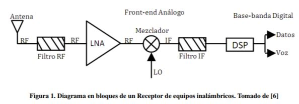

<p>
    La principal aplicación de los amplificadores de bajo ruido (LNA) consiste en amplificar la señal recibida en el front de Radio Frecuencia (RF) en los sistemas de recepción en equipos inalámbricos, como los teléfonos celulares en los cuales la señal recibida
    es muy baja (típicamente en el rango de -110 dBm y -70 dBm [6]) y debe ser amplificada antes de demodulación. Un diagrama en bloques de un receptor típico de este tipo de sistemas se muestra en la figura1.
    
</p>